Blender Beginner for Beginner Tutorial: Tozeur Market Sculpture
13th June 2009 - Blender 2.47
I’ve previously stated that I intend to learn 3D modelling well enough to recreate simple ancient historical architectural scenes after being inspired by my trips to Pompeii and Dougga. To this aim I downloaded Blender, an opensource 3D modelling program, and bought The Essential Blender. After having read the first 3 chapters of that book and a few online tutorials (mainly around materials and textures), I was ready to try creating my first model. I decided upon a sculpture found in the market square of Tozeur, Tunisia- it seemed simple enough, but it wasn’t immediately clear to me how it should be done. Below you can see images of the original and my model.
The first thing I did was get out my ruler and hold it up to the screen, trying to measure the dimensions of the sculpture. The figures I use below are based on the rough proportions worked out in this manner. It should also be said that I didn’t just sit down and do this in one session. If you can do that on your first model you are doing much better than me! Indeed, it took me about a week and numerous attempts before I was happy with it. Onto the tutorial proper.
-
Create a cylinder mesh (SPACE key, choosing Add -\> Mesh -\> Cylinder)
with 32 vertices, radius 5, depth 2 and capped ends. Ensure the centre
of the cylinder is at (0,0,0), the center of the 3D View, as this will
make later calculations easier. I did this by selecting the cylinder
with the RMB then using the N key to bring up the transform panel and
setting LocX, LocY & LocZ to 0. This will be used to create a single
disc of the sculpture.
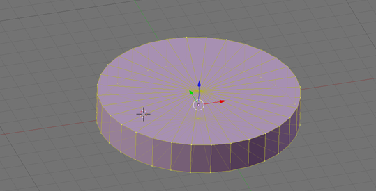 -
While the cylinder is selected go into edit mode (TAB key) and edge
select mode (CTRL-TAB and select the Edges option) and with the SHIFT
key select all the edges radiating from the centre on the top of the
cylinder. Then use the W-key and chose subdivide.
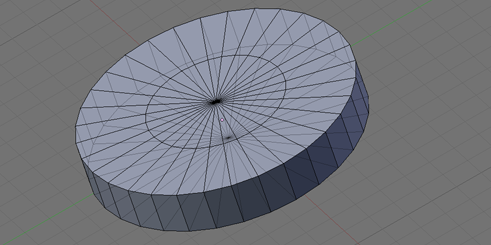 -
Ensure all the edges are unselected (using the A key) and select all the
side edges of the cylinder, again use the W key to subdivide. Again
unselect all the edges and then select all the edges in the top half of
the side of the cylinder and subdivide with W once more. I found using
side view (1 on the numberpad) and the box select tool (B key) very
helpful with selecting the edges in this step.
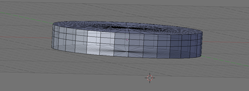 -
Switch back to vertex select mode (CTRL-TAB and select Vertices) then
select the cylinder side’s top 2 loop’s vertices (select edge loop may
help here - select two linked edges then CTRL-E and choose the Edge Loop
Select option). Scale them both in the x&y axes by 1.05 (after selecting
them hit S, then X, then enter 1.05 return, then S, Y, 1.05 return).
This creates a loop of faces which will be the tiled section of the
disc.
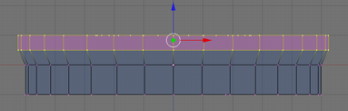 -
Select the next loop down and move all of the vertices to 0.5 in the z
axis (I used N to do this and changed Median Z). This should mean this
ring is at the same height on the z axis as the ring above.
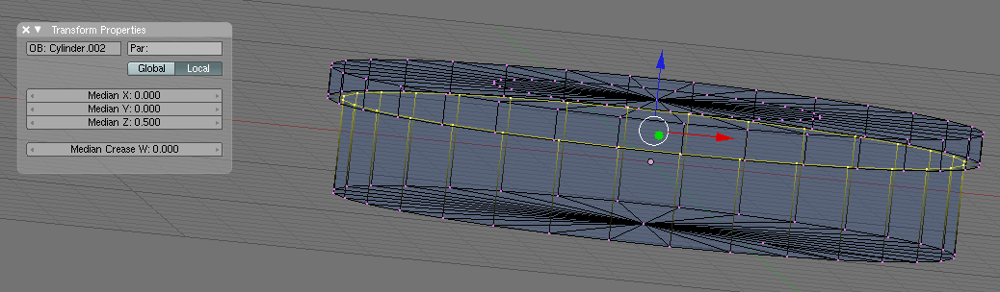 -
Select the inner ring of vertices on the top face. Scale them in the x&y
axes by 1.85. Then hit E for extrude and choose Region and type –0.4.
This produces the cup of each disc.
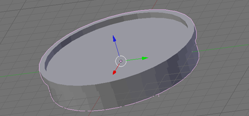 -
Select the outer curved sides of the shape (2 rings of faces) and set
them smooth (the menu option Select-\>Linked Flat Faces may help here).
The smooth button is on the editing (F9) panel.
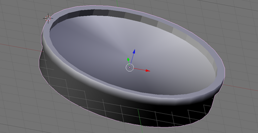 -
Download the
concrete
texture from the Blender Open Material Repository, load it using
SHIFT-F1 then finding Concrete under materials in the downloaded blend
file. Create a new material (press “new” on the Materials subpanel of
the Editing (F9) panel). Then go to the Shading (F5) panel and in the
Link To select box (under Links and Pipeline) and choose Concrete.
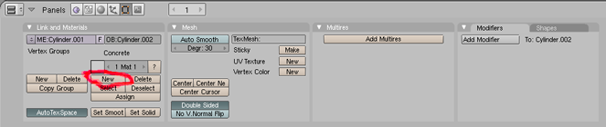 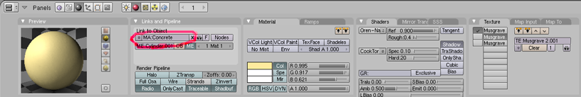 -
Then change the material to be a paler yellow (R=0.995, G=0.917,
B=0.621) on the Materials part of the Shading panel and turn off all
textures except the first Musgrave on the Texture section of the same
panel - this allows the yellow to come through. You might think
somewhere around this point the bottom ring should be scaled in to
create the slope of each disc. However, not doing this makes applying
the UV textures easier.
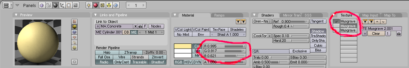 -
Select two directly opposite edges on the sides of the disc for both
smoothed face rings and hit CTRL-E and select Mark Seam. This will mark
the edges that will break the loop of faces when UV unwrapping.
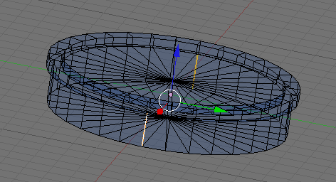 -
Press TAB to go back to Object mode and ensure the disc is selected.
Duplicate with SHIFT-D, moving the new object up the z axis so it
doesn’t block your view of the original disc. Repeat until there are 7
discs.
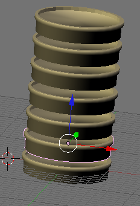 -
Select each of the discs above the original in turn and shrink them
(smallest at the top) using the N key to bring up the transform panel
and then changing DimX & DimY to 8.5, 7, 6, 5, 4 and 3 respectively.
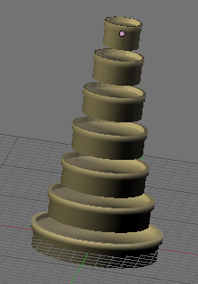 -
Now it is time to apply the brick and tile textures. This is the bit
that took some time to work out. Just applying the textures doesn’t look
right. UV unwrapping needs to be used. Have a 3D View window and a
UV/Image Editor window open. Go to side view (numpad 3) and select all
the faces of the main part of the bottom disc. Press U and choose
unwrap, the windows should look like the below image. If there are not
exact rectangles then it is probably because the 3D View is not exactly
side on to the disc or the seams from step 10 are not directly opposite
each other. Note if the sides of the disc were sloped then so would the
rectangle in the UV view and applying the texture would be much harder.
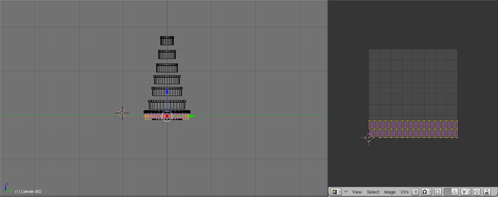 -
Expand the rectangles so that they take up the entire grid. The points
can be selected in the same way as in the 3d view (use A for select
all/none and B for box select). This will make it easier to apply the
image to the faces.
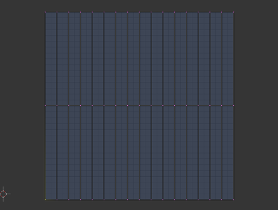 -
Now choose Image-\>New on the UV/Image Editor window and keep the size
to 1024x1024, then save the image in your favourite format (there is a
type selection box at the bottom of the save screen), this tutorial used
PNG. Then open the image in your favourite editor and copy 32 versions
of the brick image in 2 rows of 16 over the
image (this means the brick image needs to be scaled to 64x512
pixels). The brick image was cropped and photoshopped from the original
sculpture photo.
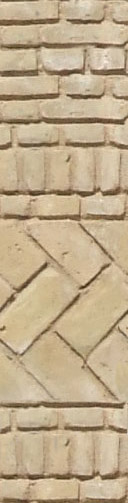 -
Ensuring the same faces unwrapped in step 13 are selected, create a new
material for the side of the disc (using the same New button as in step
8 and Assign button next to it). This should create a new concrete
material and apply it to just the selected faces. Now go to the Texture
subpanel of the Shading panel (F5), as shown below. Create a new texture
(called brick in the image) and load the brick image from the previous
step. Back on the Material’s panel MapTo subpanel select UV mapping. If
you were to add a camera and lamp then you would now see the brick
texture applied.
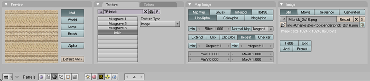 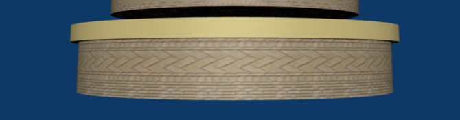 -
Now the same texture needs to be applied to the sides of the rest of the
discs. Because the circumference of each disc is less than the one
before, the same 2x16 image can’t be used for all of them as this would
result in each brick getting progressively smaller. Thus the image
applied needs to have progressively smaller number of brick tiles.
Keeping the brick image at 64x512 pixels, redo steps 13-16 for all the
other discs but make the saved UV image of size 896x1024, 704x1024,
640x1024, 512x1024, 448x1024, 320x1024 which results in
2x14, 2x11,
2x10, 2x8,
2x7, 2x5 grids
of the brick texture. This is not exact, but close enough to make it
look like all the bricks are the same size.
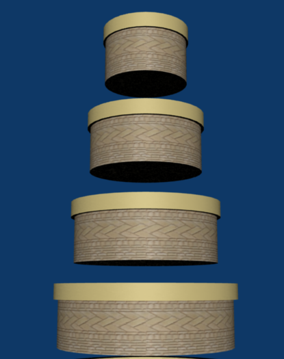 -
Repeat steps 13 -\> 17 for the higher, smaller outside ring of faces on
each disc with the tile texture. Scale the tile image to 128x256, then
make the uv images 4096x512, 3584x512, 2560x512, 2048x512, 1792x512,
1280x512 which contain 2x32,
2x28, 2x22,
2x20, 2x16,
2x14, 2x10
copies of the tile image.
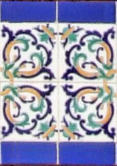 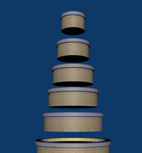 - Select the bottom edge loop of each disc in turn and scale it 0.8 in the x & y axes for the bottom two and 0.8 for the rest.
-
Move each disc so that the point at the base of the one above is on top
of the center point of the one below (ie they are exactly on top of each
other), using the transform panel N. Then select all the discs and use
CTRL-J to join them together.
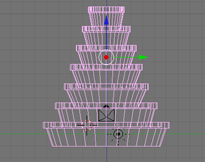
{kind=link}
{kind=link}
{kind=link}
{kind=link}
{kind=link}
{kind=link}
{kind=link}
{kind=link}
{kind=link}
{kind=link}
{kind=link}
{kind=link}
{kind=link}
{kind=link}
And it is complete! There are a few extra things that can be done. Firstly the brick and tile image textures could be better. I didn’t take the photo of the sculpture with texturing in mind. Apparently it would have been better to take any photos in flat light, that is overcast or in shadow. Also a few closer shots to get a better view of the brickwork would have been nice. Similarly, no bump maps (or similar) have been used because I don’t understand these yet - I still have a bit to learn about materials. Lastly, the model as constructed above has a few hidden faces where the discs are joined.
The next proper step is to set up some cameras and lights so you can take a good picture. That is left as a further exercise - below is a render I did earlier. Also, here is the blend file constructed from the above steps for your comparison.

Tozeur
Scuplture Blender Model by
Charles
Cordingley is licensed under a
Creative
Commons Attribution 2.0 UK: England & Wales License.